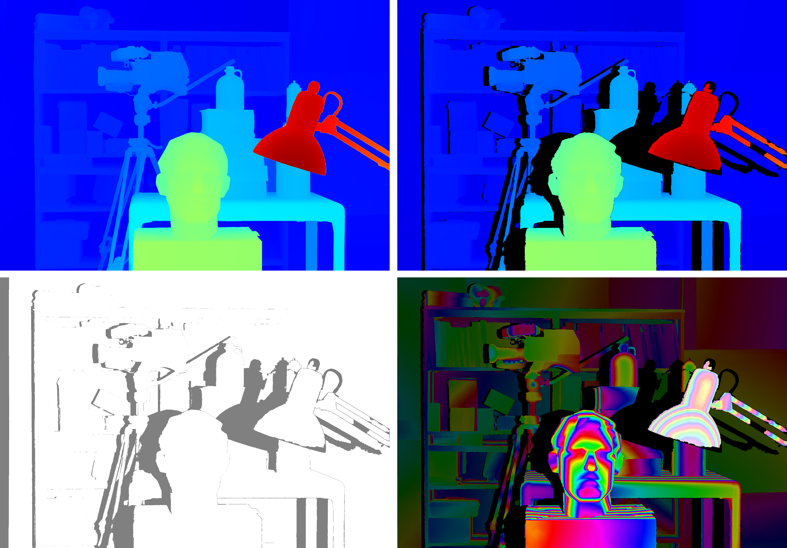
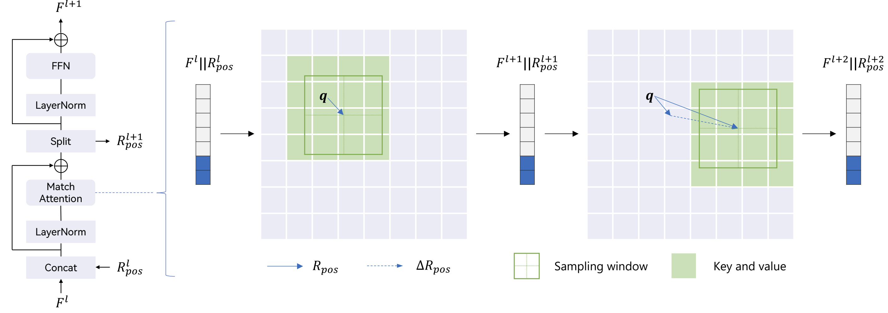
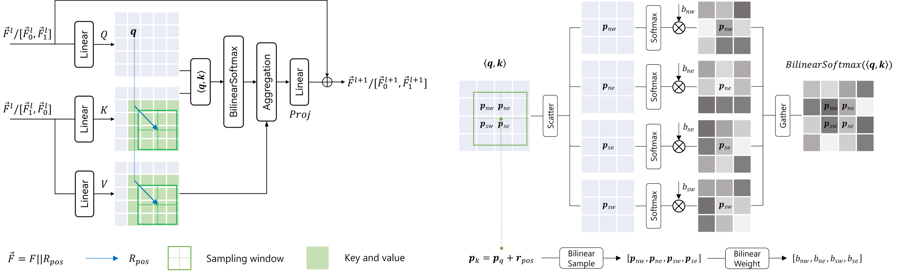
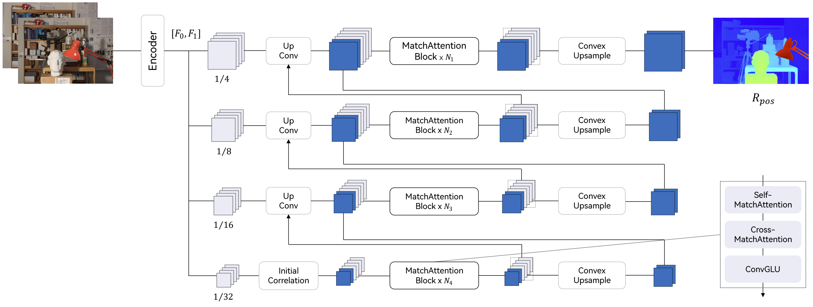
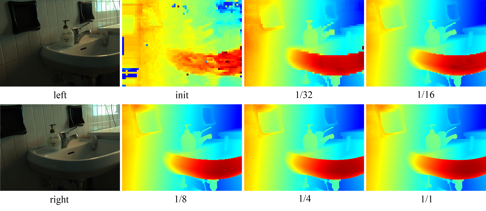

Abstract
Cross-view matching is fundamentally achieved through cross-attention mechanisms. However, matching of high-resolution images remains challenging due to the quadratic complexity and lack of explicit matching constraints in the existing cross-attention. This paper proposes an attention mechanism, MatchAttention, that dynamically matches relative positions. The relative position determines the attention sampling center of the key-value pairs given a query. Continuous and differentiable sliding-window attention sampling is achieved by the proposed BilinearSoftmax. The relative positions are iteratively updated through residual connections across layers by embedding them into the feature channels. Since the relative position is exactly the learning target for cross-view matching, an efficient hierarchical cross-view decoder, MatchDecoder, is designed with MatchAttention as its core component. To handle cross-view occlusions, gated cross-MatchAttention and a consistency-constrained loss are proposed. These two components collectively mitigate the impact of occlusions in both forward and backward passes, allowing the model to focus more on learning matching relationships. When applied to stereo matching, MatchStereo-B ranked 1st in average error on the public Middlebury benchmark and requires only 29ms for KITTI-resolution inference. MatchStereo-T can process 4K UHD images in 0.1 seconds using only 3GB of GPU memory. The proposed models also achieve state-of-the-art performance on KITTI 2012, KITTI 2015, ETH3D, and Spring flow datasets. The combination of high accuracy and low computational complexity makes real-time, high-resolution, and high-accuracy cross-view matching possible.
Zero-shot Stereo Matching Results
High-Resolution inference with fine-grained details (images from Middlebury dataset).

Accurate 3D reconstruction.
MatchStereo/MatchFlow outputs both view results and unreliable mathches can be filtered out by a consistency check.

Real-time inference (MatchStereo-T @1280x720 on a RTX 4060 Ti GPU).
Overview
MatchAttention accepts concatenated features and relative positions as input and updates them by residual connection. Attention sampling is performed at the window level with window center determined by the relative positions. The relative positions can be of any value and are iteratively updated across layers. Therefore, MatchAttention has a long-range connection property and linear complexity. Explicit matching between queries and key-value pairs within the attention sampling window is also achieved.

Left: Detailed architecture of MatchAttention; Right: Contiguous and differentiable attention sampling using BilinearSoftmax.

MatchDecoder with self-MatchAttention and cross-MatchAttention as building blocks.

Intermediate disparity/flow visualization from initial correlation to the final output (images from Booster and Sintel datasets).


Explainable occlusion handling
Top row show the color image and GT occlusion mask from Middlebury dataset (Playtable, 1852 x 2720); Bottom row show the cross relative position \(R_{pos}[..., 0]\) (disparity) and the self relative position \(sR_{pos}[..., 0]\) predicted by MatchStereo-B trained on FSD Mix datasets.
The visualization of \(sR_{pos}[..., 0]\) demonstrates that the attention sampling positions for occluded regions are at their non-occluded neighboring regions.

Comparison with SOTA
Results from four public real-world benchmarks.

BibTeX
@article{yan2025matchattention,
title={MatchAttention: Matching the Relative Positions for High-Resolution Cross-View Matching},
author={Tingman Yan and Tao Liu and Xilian Yang and Qunfei Zhao and Zeyang Xia},
journal={arXiv preprint arXiv:2510.14260},
year={2025}
}